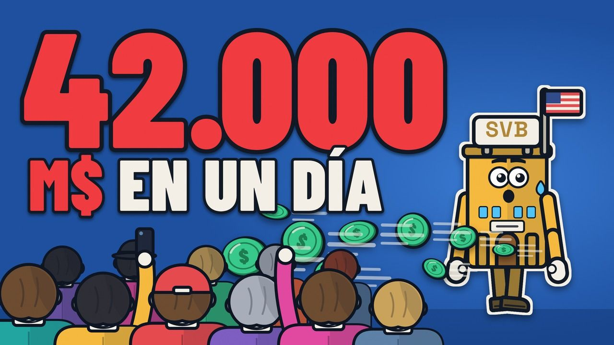
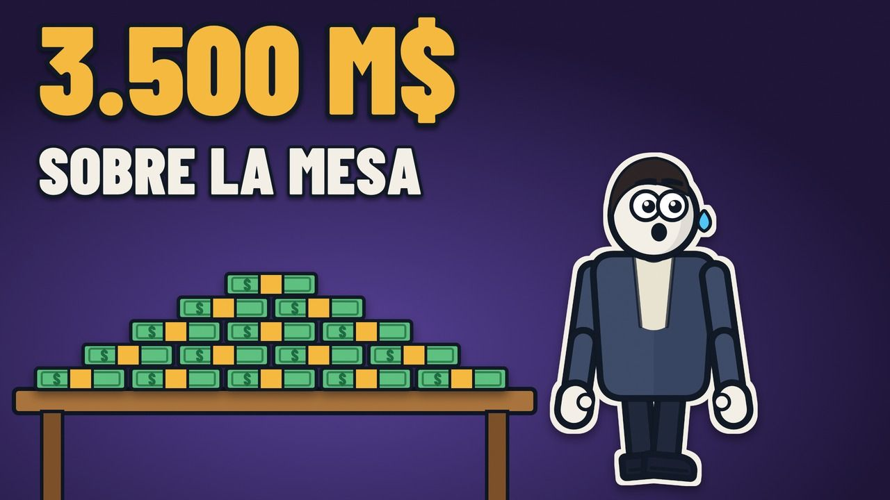
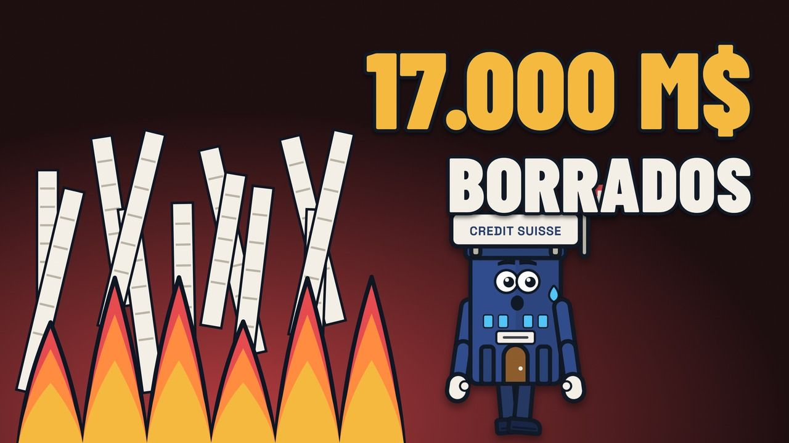
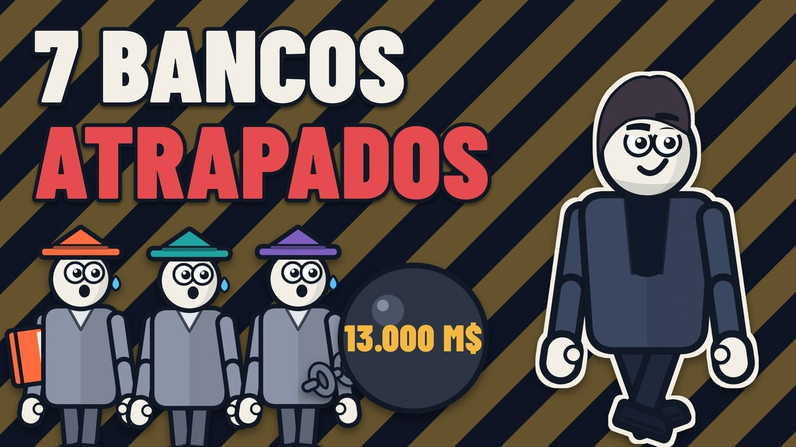

Grandes operaciones, explicadas
Operaciones reales, desmontadas con documentos públicos: quién pagó, quién prestó, quién asumió el riesgo y cuánto costó.

Episodio 04 · se estrena el 12 nov
Silicon Valley Bank: la venta de acciones de 2.250 millones que desató la fuga de depósitos
Silicon Valley Bank parecía estar bien sobre el papel. Unas 42 horas después de anunciar una venta de acciones de 2.250 millones de dólares, los reguladores lo cerraron.

Episodio 03 · se estrena el 5 nov
La salida a bolsa de Figma: 3.500 millones de dólares sobre la mesa, según Bloomberg
Los bancos colocaron Figma a 33 dólares y el primer día cerró a 115,50, un 250 % más. Quién dejó más de 3.500 millones sobre la mesa, según Bloomberg, y qué pasó después.

Episodio 02
Credit Suisse: cómo se borraron 17.000 millones de dólares en bonos en un fin de semana
El 19 de marzo de 2023, los bonos AT1 de Credit Suisse, unos 16.000 millones de francos, quedaron a cero y los accionistas cobraron 3.000 millones. Qué pasó y qué dicen los tribunales.

Episodio 01
Cómo se financió de verdad la compra de Twitter por 44.000 millones de dólares
Siete bancos se comprometieron a prestar 13.000 millones de dólares para que Musk comprara Twitter: los cuatro tramos de deuda y por qué quedaron atrapados 30 meses.